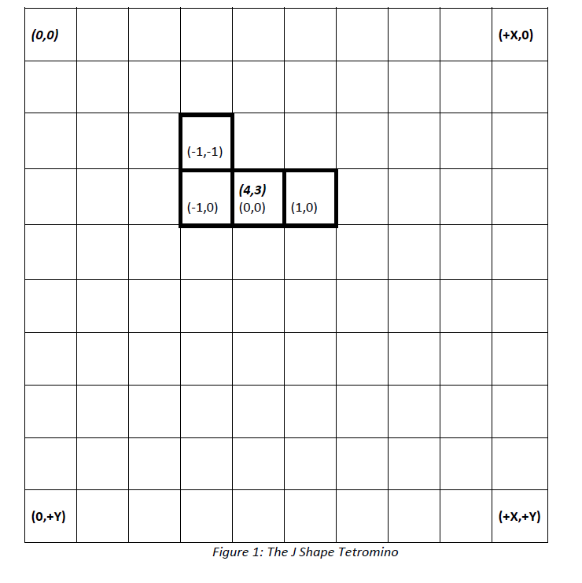

- java.lang.Object
-
- kopper.tetris.shape.Shape
-
- kopper.tetris.shape.ShapeJ
-
public class ShapeJ extends Shape
A Reference diagram of coordinate space of this class
Figure 1 shows how coordinates for the objects of this class are stored. Each Shape defines an Absolute Position (see bolded coordinate (4,3) in Figure 1), which is the absolute position of the Shape's center most cell in relation to the upper left corner of the game screen. Then each shape defines the rest of its member cells using relative coordinates (see plainly-styled, non-bolded coordinates in Figure 1) that have an origin coordinate on the center cell. The absolute position is defined as an argument during this class's instantiation using the constructor.
During rendering of the screen the absolute position of each member cell can be easily calculated by adding the relative coordinates to the single absolute coordinate representing the Shape's Absolute Position.
- Author:
- KopperKnight
-
-
Field Summary
Fields Modifier and Type Field Description private Coord[]relativeCoordsFigure 1 above shows the actual locations of these relative coordinates.private Coord[]tempCoordsFigure 1 above shows the actual locations of these temporary relative coordinates, when initiated.
-
Method Summary
All Methods Instance Methods Concrete Methods Modifier and Type Method Description ColorgetCellColor(int cellNum)Methods of this class always returnsColor.blueintgetCellCount()This method returns the total number of cells that make up this Shape.CoordgetRelativeCellPos(int cellNum)Returns the relative coordinate for the cell in question.CoordgetTrialRelativeCellPos(int cellNum)Works likeShape.getRelativeCellPos(int), except in a trial temporary way.-
Methods inherited from class kopper.tetris.shape.Shape
clearTrial, cloneCoords, drawShape, drawShape, getAbsoluteCellPos, getAbsoluteShapePos, getTrialAbsoluteCellPos, getTrialAbsoluteShapePos, isVisible, rotateShapeClockwise90, rotateShapeCounterClockwise90, setVisible, translateShape, translateShapeDown, trialRotateShapeClockwise90, trialRotateShapeCounterClockwise90, trialTranslateShape
-
-
-
-
Field Detail
-
relativeCoords
private Coord[] relativeCoords
Figure 1 above shows the actual locations of these relative coordinates.
-
tempCoords
private Coord[] tempCoords
Figure 1 above shows the actual locations of these temporary relative coordinates, when initiated. This variable is used to keep track of coordinates for thetrial....():methods of this class.
-
-
Constructor Detail
-
ShapeJ
public ShapeJ(Coord absolutePos)
Creates an object with the supplied x, y Cartesian coordinate for its absolute position. See Figure 1 for what this means precisely.- Parameters:
absolutePos- The absolute position of this Shape.
-
ShapeJ
public ShapeJ(int x, int y)Creates an object with the supplied x, y Cartesian coordinate for its absolute position. See Figure 1 for what this means precisely.- Parameters:
x- The x component of the coordinate location.y- The y component of the coordinate location.
-
-
Method Detail
-
getCellColor
public Color getCellColor(int cellNum)
Methods of this class always returnsColor.blue- Specified by:
getCellColorin classShape- Parameters:
cellNum- the cell in question.- Returns:
Color.blue.
-
getRelativeCellPos
public Coord getRelativeCellPos(int cellNum)
Description copied from class:ShapeReturns the relative coordinate for the cell in question. This is the coordinate of this cell in relation to this Shape's center cell.- Specified by:
getRelativeCellPosin classShape- Parameters:
cellNum- the cell in question.- Returns:
- the relative coordinate of the cell in question.
-
getTrialRelativeCellPos
public Coord getTrialRelativeCellPos(int cellNum)
Description copied from class:ShapeWorks likeShape.getRelativeCellPos(int), except in a trial temporary way. If no trial translation or trial rotation called previously, or ifShape.clearTrial()just immediately and previously called, this method returns the same asShape.getRelativeCellPos(int). Otherwise, this method returns the relative temporary coordinate for the cell in question. This is the temporary coordinate of this cell in relation to this Shape's temporary center cell. The temporary data is used for collision detection before collisions actually occur.- Specified by:
getTrialRelativeCellPosin classShape- Parameters:
cellNum- the cell in question.- Returns:
- the temporary relative coordinate of the cell in question.
-
getCellCount
public int getCellCount()
Description copied from class:ShapeThis method returns the total number of cells that make up this Shape. This method provides the link between future subclasses and the logic performed in this super class. All FOR loops, and cell operations defined in this superclass use this method to figure out the number of iterations of loops to perform.- Specified by:
getCellCountin classShape- Returns:
- the number of cells that make up this shape.
-
-